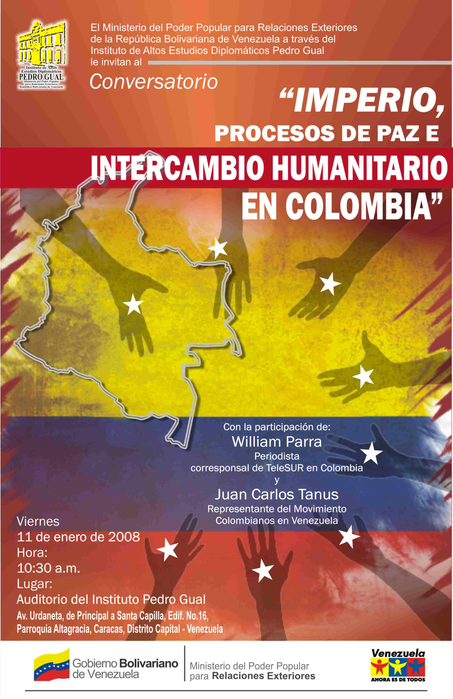

WikiLeaks: FARC-EP elbarcinocolombia@yahoo.com mail archive
This message is part of a particular mailbox provided at WikiLeaks
and it should be discussed here.
[Date Prev][Date Next][Thread Prev][Thread Next][Date Index][Thread Index]
Invitación a conferencia "Imperio, procesos de paz e intercambio humanitario en Colombia"
- Subject: Invitación a conferencia "Imperio, procesos de paz e intercambio humanitario en Colombia"
- From: "nO a LaS BaSeS MiLiTaReS YanQuiS En CoLoMbiA" <iutomsdice@gmail.com>
- Date: Tue, 8 Jan 2008 12:56:57 -0400
- Authentication-results: mta184.mail.mud.yahoo.com from=googlegroups.com; domainkeys=fail (bad syntax)
- Authentication-results: mx.google.com; spf=pass (google.com: domain of iutomsdice@gmail.com designates 64.233.184.228 as permitted sender) smtp.mail=iutomsdice@gmail.com; dkim=pass (test mode) header.i=@gmail.com
- Dkim-signature: v=1; a=rsa-sha256; c=relaxed/relaxed; d=googlegroups.com; s=beta; h=domainkey-signature:received:received:x-sender:x-apparently-to:received:received:received-spf:authentication-results:received:dkim-signature:domainkey-signature:received:received:message-id:date:from:to:subject:in-reply-to:mime-version:content-type:references:reply-to:sender:precedence:x-google-loop:mailing-list:list-id:list-post:list-help:list-unsubscribe; bh=suAl2NjwbKUWR6tk6aVTF20QSp30xn8ZXrW1XZmBx/I=; b=DuooqutO+Hu9Kt2ipb8l+BWxQyApvREPl3pNcLAtJBDdhtwvLBQ+Q2UOt/Itq2Edy8gsMAvHnNxY53IH6ppjr8BL3Kky7DXzc4vFMMcK0kOValVwPjR+Kghvg+TZBf5/EGKp9LuG6youpoziR/OAuMfyBHsVGH5g6SWwTRJJD/Q=
- Dkim-signature: v=1; a=rsa-sha256; c=relaxed/relaxed; d=gmail.com; s=gamma; h=domainkey-signature:received:received:message-id:date:from:to:subject:in-reply-to:mime-version:content-type:references; bh=7kavg0h3TLFRktzascTqbtXYwAP9bKXPDwUvt3vTgII=; b=nDavVKO3Wx2nIcIBmltef5ehXHDmPOCf5PT9nJ/nxBZJo24ABDcDIoOq3c9qG61jlmB4GEEN8eWTDxDpUsR25XlzFrj38bsPiz2qZk7+SISs4CHFPD3iDazIx9JGfiXMX4Lt1eEkzCM88vBZGr+83U2w7glhM8Zq1mP4yrVXij0=
- Domainkey-signature: a=rsa-sha1; c=nofws; d=googlegroups.com; s=beta; h=x-sender:x-apparently-to:received-spf:authentication-results:dkim-signature:domainkey-signature:message-id:date:from:to:subject:in-reply-to:mime-version:content-type:references:reply-to:sender:precedence:x-google-loop:mailing-list:list-id:list-post:list-help:list-unsubscribe; b=wVwFEWnMBlakptR6Y2sBwisOYb8mnwlqm5duk63lDsdsU7L5ZsLKJxYUYY1ZhTKl1z6u1H41JG4tqlBdQEfEvXcHt8R26i8HP1QO5RZ6NvPJ8IxMESe8cK1m25EjigfgJoaqzOe+IY5+zJwiP85YmfUW8QannrtYolwkHEFe/cc=
- Domainkey-signature: a=rsa-sha1; c=nofws; d=gmail.com; s=gamma; h=message-id:date:from:to:subject:in-reply-to:mime-version:content-type:references; b=qG5/xYVyZ+ZMQ5ak5Hl+1y9IlQ1PyuQheSBNay9nhVYPiU3NPsokfwwTgwqLBhhVntChpt5gyITrvMbESIGx7EuZ+MSSHDduGqUHM78qj1eBuYv3vqxqxArBMliYgZzJXHz2zFT1y9K6pB20aykJ+radpGgp68Yy50h6N6yEgqc=
- In-reply-to: <8b0a387b0801071013r3441c01cr2ebf66b5f5bda0d9@mail.gmail.com>
- List-help: <mailto:Iutomsdice-help@googlegroups.com>
- List-id: <Iutomsdice.googlegroups.com>
- List-post: <mailto:Iutomsdice@googlegroups.com>
- List-unsubscribe: <http://googlegroups.com/group/Iutomsdice/subscribe>, <mailto:Iutomsdice-unsubscribe@googlegroups.com>
- Mailing-list: list Iutomsdice@googlegroups.com; contact Iutomsdice-owner@googlegroups.com
- References: <8b0a387b0801071013r3441c01cr2ebf66b5f5bda0d9@mail.gmail.com>
- Reply-to: Iutomsdice-owner@googlegroups.com
El Instituto de Altos Estudios Diplomáticos Pedro Gual (IAEDPG) del Ministerio del Poder Popular para Relaciones Exteriores tiene el agrado de invitarle a la conferencia
"Imperio, procesos de paz e intercambio humanitario en Colombia" , a cargo del periodista William Parra, corresponsal de Telesur en Colombia y el señor Juan Carlos Tanus, representante del Movimiento Colombianos en Venezuela, a realizarse el próximo viernes 11 de enero de 2008, a las 10:30
a.m., en el auditorio del IAEDPG, Av. Urdaneta, Principal a Santa Capilla, Edf. Nº 16, diagonal al Banco Central de Venezuela.
--
--
COLECTIVO FRENTE DE ESTUDIANTES UNIVERSITARIOS MARISCAL SUCRE
--~--~---------~--~----~------------~-------~--~----~
COLECTIVO FRENTE DE ESTUDIANTES UNIVERSITARIOS MARISCAL SUCRE
-~----------~----~----~----~------~----~------~--~---

Entry for this page on WikiLeaks |
Discussion page on WikiLeaks |
wikileaks.org
Main Index |
Thread Index |
Author Index
{kind=link}